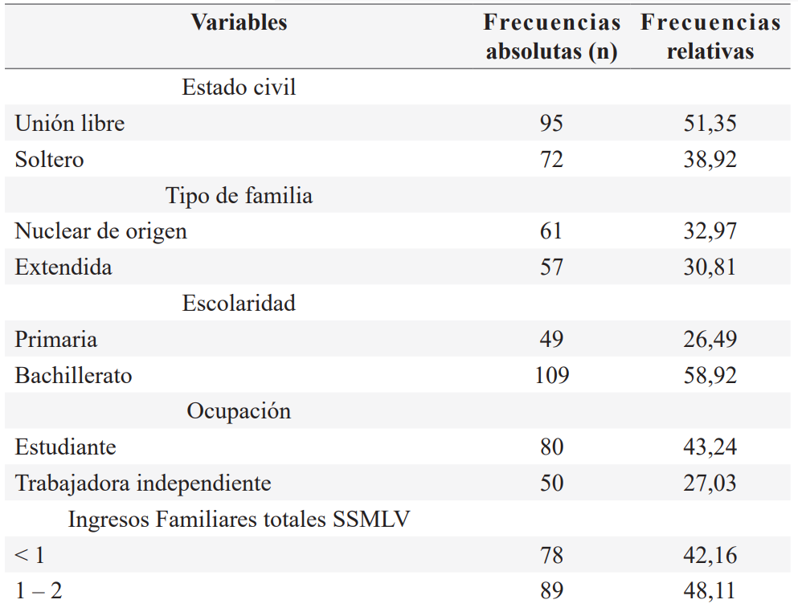
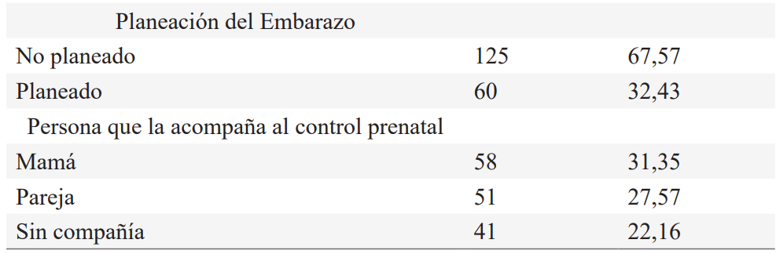
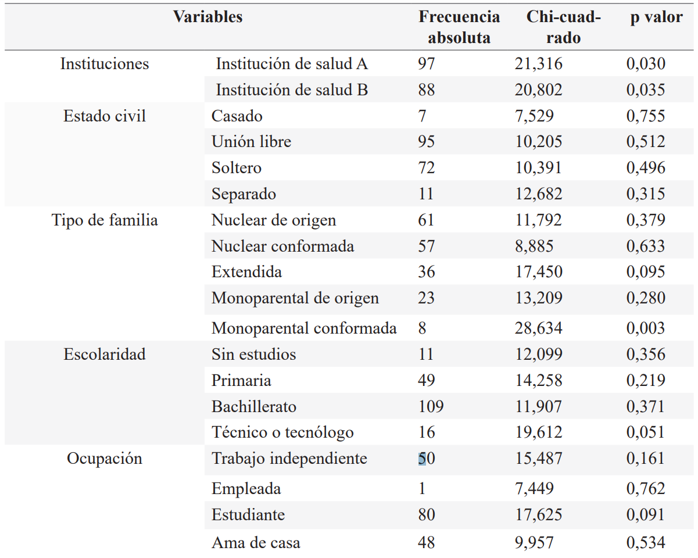
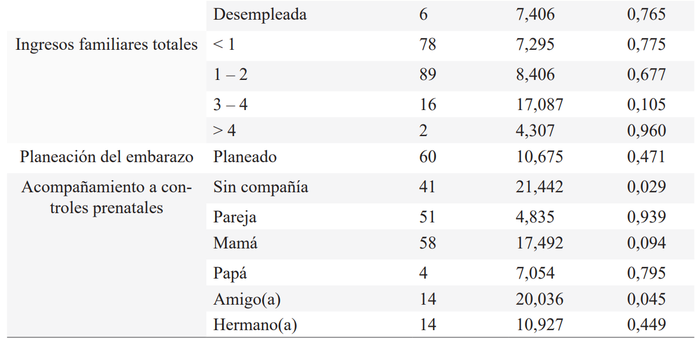
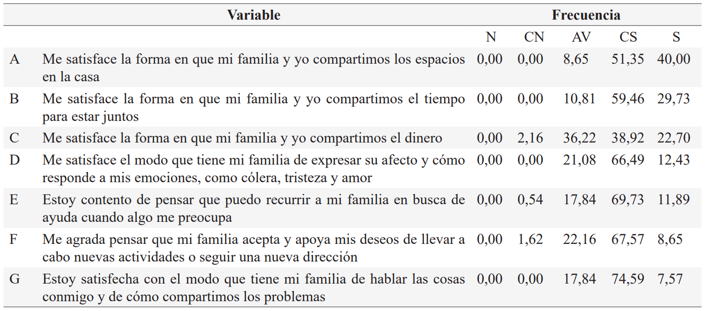

ISSN-PRINT 1794-9831 / E-ISSN 2322-7028
Vol. 19 Nº 3 / sep - dic, 2022 / Cúcuta, Colombia.
ISSN-PRINT 1794-9831 / E-ISSN 2322-7028
Vol. 19 Nº 3 / sep - dic, 2022 / Cúcuta, Colombia.
Resumen
Introducción: El embarazo en la adolescencia tiende a presentar repercusiones personales, sociales, educativas y psicológicas en la madre y en el hijo. Es por ello por lo que el apoyo de la familia y su funcionalidad resultan cruciales. Objetivo: Determinar el nivel de funcionalidad familiar existente en las familias de las adolescentes gestantes asistentes a controles prenatales en tres instituciones de salud de Cartagena-Colombia durante 2021. Materiales y Métodos: Estudio descriptivo, de corte transversal, y asociación. La población estuvo constituida por 780 adolescentes gestantes que asisten a controles prenatales en dos instituciones. Se determinó una muestra de 185 adolescentes gestantes, seleccionadas mediante muestreo probabilístico. Fue aplicado instrumento sociodemográfico y APGAR familiar. Resultados: Las gestantes participaron de la institución A (50,81%) y de la institución B (44,32%), se trató de adolescentes bachilleres (58,92%), que conviven en unión libre (51,35%), en familias nucleares de origen (32,97%) y sus familias devengan ingresos entre 1 – 2 salarios mínimos (48,11%). El embarazo actual no fue planeado, y a los controles prenatales asisten con la mamá (31,35%), la pareja (27,57%) o solas (22,16%). La funcionalidad normal fue la más frecuente (99,46%), y se presentó asociación (p ≤ 0,05) con las instituciones, con la tipología familiar de naturaleza monoparental conformada y con el acompañamiento a los controles prenatales. Conclusión: Se determinó un nivel de funcionalidad familiar normal en las familias de las adolescentes gestantes asistentes a controles prenatales en dos instituciones de salud de Cartagena.
Palabras Claves: Puntaje de APGAR; Embarazo en adolescencia; Familia; Cuidado prenatal.
Abstract
Introduction: Pregnancy in adolescence tends to have personal, social, educational, and psychological repercussions on the mother and child. That is why the support of the family, and its functionality are crucial. Objective: To determine the level of family functionality existing in the families of pregnant adolescents attending prenatal check-ups in three health institutions in Cartagena-Colombia during 2021. Materials and Methods: Descriptive, cross-sectional, and association study. The population consisted of 780 pregnant adolescents who attend prenatal check-ups in two institutions. A sample of 185 pregnant adolescents, selected by probabilistic sampling, was estimated. Sociodemographic instrument and family APGAR were applied. Results: Pregnant women participated in institution A (50.81%) and institution B (44.32%), they were high school adolescents (58.92%), who live together in a free union (51.35%), in nuclear families of origin (32.97%) and their families earn between 1 – 2 minimum wages (48.11%). The current pregnancy was not planned, and prenatal check-ups are attended by the mother (31.35%), the couple (27.57%) or alone (22.16%). Normal functionality was the most frequent (99.46%) and was correlated (p ≤ 0.05) with the institutions, with the family typology of a single-parent nature formed and with the accompaniment to prenatal controls. Conclusion: A normal level of family functionality was determined in the families of pregnant adolescents attending prenatal check-ups in two health institutions in Cartagena.
KeyWords: APGAR score; Pregnancy in adolescence; Family; prenatal care.
Resumo
Introdução: A gravidez na adolescência tende a ter repercussões pessoais, sociais, educacionais e psicológicas sobre a mãe e o filho. É por isso que o apoio da família e sua funcionalidade são cruciais. Objetivo: Determinar o nível de funcionalidade familiar existente nas famílias de adolescentes gestantes que participam de check-ups pré-natal em dois instituições de saúde em Cartagena-Colômbia durante 2021. Materiais e métodos: Estudo descritivo, transversal e associacao de estudo. A população era composta por 780 adolescentes gestantes que frequentam o pré-natal em dois instituições. Foi estimada uma amostra de 185 adolescentes gestantes, selecionadas por amostragem probabilística. Foram aplicados instrumentos sociodemográficos e APGAR familiar. Resultados: Gestantes participaram da instituição A (50,81%) e da instituição B (44,32%), eram adolescentes do ensino médio (58,92%), que vivem juntas em união gratuita (51,35%), em famílias nucleares de origem (32,97%) e suas famílias ganham entre 1 e 2 salários-mínimos (48,11%). A gestação atual não foi planejada, e os check-ups pré-natal são atendidos pela mãe (31,35%), pelo casal (27,57%) ou sozinho (22,16%). A funcionalidade normal foi a mais frequente (99,46%), e foi correlacionada (p ≤ 0,05) com as instituições, com a tipologia familiar de natureza monoparental conformada e com o acompanhamento aos controles pré-natais. Conclusão: Foi determinado um nível normal de funcionalidade familiar nas famílias de adolescentes gestantes que frequentam os check-ups do pré-natal em dois instituições de saúde de Cartagena.
Palavras-chave: Índice APGAR; Gravidez na adolescencia; Familía; Cuidado pré-natal.
Autor de correspondencia*
1* Enfermera.
Magister en Enfermería.
Docente Corporación Universitaria
Rafael Núñez. Cartagena, Colombia
ymanriquea@curnvirtual.edu.co,
Enfermera.
Magister en Enfermería.
Docente Corporación Universitaria
Rafael Núñez. Cartagena, Colombia
ymanriquea@curnvirtual.edu.co,  0000-0002-3986-7870
0000-0002-3986-7870
2* Enfermera.
Magister en Educación.
Docente Corporación Universitaria
Rafael Núñez. Cartagena, Colombia.
moraima.deltoro@curnvirtual.edu.co, 0000-0001-6710-5171
Recibido: 22 junio 2022
Aprobado: 25 octubre 2022
Para citar este artículo / To reference this article / Para citar este artigo: Manrique-Anaya Y, Del Toro-Rubio M. Funcionalidad familiar de adolescentes asistentes a control prenatal. Cartagena 2021. 2023; 20(1):22-32. https://doi.org/10.22463/17949831.3314
© Universidad Francisco de Paula Santander.
Este es un artículo bajo la licencia CC-BY-NC-ND

Introducción
Un embarazo que tome lugar en la etapa de la adolescencia presenta repercusiones sobre la salud de la adolescente, así como en sus circunstancias sociales, en el desenlace del embarazo y en el desarrollo a largo plazo del hijo (1) Todos estos elementos, en tanto que son complejos, interrelacionados y con repercusiones en la salud pública, hacen que se le catalogue como una problemática (2).
Las cifras existentes coadyuvan a dimensionar el panorama. En el campo internacional, la Organización Mundial de la Salud indica que, si bien la tasa de natalidad entre las adolescentes ha exhibido una tendencia decreciente, se estima que la tasa del 11% en el mundo se producen entre las jóvenes de 15 a 19 años, sobre todo en países de ingresos bajos y medianos (3). La tasa mundial de embarazos a esta edad se calcula en 46 por cada 1.000 adolescentes, a la vez que a nivel de América Latina y el Caribe continúan en 66,5 nacidos por cada 1.000 niñas de entre 15 y 19 años, la segunda más alta del mundo luego de África Subsahariana (4).
En Colombia el Ministerio de Salud revela que el 13,8% de las mujeres con edades de 13-19 años han estado embarazadas, sobre todo en zonas rurales (18,6%). Es importante destacar que, en las zonas rurales de Colombia, cada año toman lugar cerca de 40.000 nacimientos en niñas y mujeres adolescentes (5). Al enfocar la situación en Cartagena, puede decirse que esta es una de las ciudades del país con mayor recurrencia de embarazos en la adolescencia. El Departamento Administrativo Distrital de Salud reporta que, del total de la atención en sala de partos el 21,5% de estos, se dan en menores de edad (6).
Al panorama descrito se suma la inmadurez (física y psicológica) que aún existe en la adolescencia para asumir el rol de madre y la responsabilidad en la crianza de los hijos(a) lo cual podría ser una situación que trae consecuencias familiares. Por tanto, el apoyo y el funcionamiento de la familia constituye un factor crítico durante esta transición, destacándose el soporte que brinda en cuanto a lo socioeconómico, financiero y emocional, además se incluye la satisfacción de necesidades tales como la alimentación, la vivienda, el cuidado del hijo y el asesoramiento (7,8).
Los cambios físicos y psicológicos ocurren tanto en la gestante adolescente como en el seno familiar de quien la apoya, es aquí cuando la funcionalidad familiar toma su importancia sobre todo al ser positiva o adaptativa, es decir, cuando persiste la cohesión y la comunicación entre padres e hijos, estos últimos son más propensos a presentar una salud mental favorable y mayor bienestar y la vida de ellas y en su etapa de gestación. Por el contrario, cuando el funcionamiento familiar es negativo, en los hijos sobrevienen desajustes comportamentales, síntomas depresivos y de ansiedad, así como delincuencia y uso de sustancias (9).
Diversos estudios han encontrado que, en efecto, existe relación entre el funcionamiento familiar y el embarazo en las adolescentes. Tal es el caso de Malasia, donde se ha revelado una correlación negativa significativa entre los rasgos de personalidad y la percepción de las adolescentes embarazadas sobre su funcionamiento familiar. Esto es importante desde el punto de vista del apoyo social, pues el modo en que pueden ayudar los familiares a la adolescente embarazada puede condicionar el desarrollo adecuado del embarazo (10).
En países como Nigeria, el desarrollo de un embarazo en edades tempranas se ve influenciado por el apoyo recibido de la familia, lo que a su vez se vincula con la calidad del funcionamiento familiar. De otra parte, cuando la relación madre-hija no es la adecuada por disfuncionalidad familiar, además de ser propenso el inicio de la vida sexual a edades más tempranas, se producen con mayor frecuencia embarazos y se hace necesario asumir la adaptación a su nuevo rol (11).
En España las mujeres con embarazos a edades tempranas tienden a exhibir un funcionamiento familiar menos sólido, lo que repercute adversamente en el desarrollo de las actitudes maternas comparadas con gestantes en etapa adulta, las cuales tienden a tener mejores actitudes en su rol materno, lo que guarda estrecha relación con la experiencia de vida y los conocimientos sobre la crianza de los hijos para hacerla más llevadera, demostrando con esto un óptimo funcionamiento familiar (12).
Para el caso nacional en el departamento de Santander, predomina la percepción de funcionalidad familiar regular (46,7%), sobre todo entre los niveles socioeconómicos más bajos. Esta situación desfavorable se ha relacionado con el menor apoyo social del que pueden gozar las adolescentes embarazas durante este complejo momento de sus vidas (13). En la ciudad de Montería la ausencia, o el escaso, apoyo social es consecuente con eventos durante la gestación de la adolescente y posterior al parto, ejemplo de ello es su reinserción en la vida cotidiana y lograr respeto social, lo cual amerita apoyo de la familia, si esta es deficiente tiene impacto negativo en la funcionalidad del núcleo familiar (14).
En el plano de Cartagena se ha encontrado que, el grupo de embarazadas oscila entre 13 a 19 años, la edad más frecuente corresponde a 17 (28%). Se ha detectado que la mayoría asiste de forma temprana al control prenatal durante el primer trimestre (75,3%). Además, una proporción notable pertenece a una familia altamente funcional (82,1%); sin embargo, no existe asociación significativa con la asistencia al control prenatal (15). También se ha dado a conocer que lo anterior está permeado e influido por los marcos culturales de trasfondo a las creencias y actitudes en salud (16).
En concordancia a lo anterior se ha conocido que la asistencia a los controles prenatales es mediada por la pertenencia a determinado régimen de salud, aunado a la proximidad de los establecimientos de salud, al domicilio de la gestante, su escolaridad, y aspectos familiares como la funcionalidad familiar, al percibir apoyo para asistir al control prenatal (17), debe puntualizar que, por la gran relevancia que representa sobrellevar el embarazo por las adolescentes gestantes, se necesita comprender la dinámica familiar con la madre adolescente en este momento de la vida.
Por lo expuesto, se estimó conocer el nivel de funcionalidad familiar existente en las familias de las adolescentes gestantes que asisten al control prenatal en dos instituciones de salud de Cartagena-Colombia.
Materiales y métodos
Se realizó un estudio descriptivo de corte transversal (18, 19,20) y de asociación (21). La población estuvo constituida por 780 adolescentes gestantes que asistieron a controles prenatales a la institución A y la institución B localizadas en la ciudad de Cartagena; se estimó una muestra de 185 adolescentes gestantes, escogidas mediante un muestreo probabilístico, considerando los siguientes criterios de inclusión: 1) adolescentes gestantes entre 14 - 16 años (adolescencia intermedia) o entre 17 – 19 (adolescencia tardía); 2) adolescente que asista a los controles prenatales de alguna de las dos instituciones de salud seleccionadas; y 3) las adolescentes gestantes que desee participar en el estudio, firmando el asentimiento. El criterio de exclusión: gestantes con diversidad funcional, que se les dificulte su participación en la investigación.
Se aplicó encuesta sobre aspectos sociodemográficos (de diseño propio) y el test APGAR familiar, el cual es un instrumento que permite conocer, desde la opinión del paciente, la situación funcional de sus familias. Producto de validaciones previas se ha conocido un alfa de Cronbach alto (0,80), incluso a nivel nacional (0,793) (22).
Los datos fueron recolectados mediante encuestas presenciales, que se aplicaron en las dos instituciones de salud en el área de Cartagena durante los meses de agosto-diciembre 2020 y analizados en el programa SPSS versión 2.0. Los resultados fueron expresados en frecuencias relativas y absolutas, el criterio de asociación se obtuvo por el estadístico chi cuadrado con p ≤ 0,05. Parcialmente la asociación fue usada para evaluar la relación entre cada uno de los aspectos sociodemográficos con el resultado del APGAR familiar. El componente ético se acogió según la Resolución 8430 de 1993 (23), además de tener el aval del comité de ética de la Corporación Universitaria Rafael Núñez con No de acta 002-IIp2019. La investigación no presentó ningún tipo de conflicto de interés.
Resultados
Participaron 185 adolescentes gestantes, pertenecientes a dos instituciones de salud ubicadas en Cartagena. La mayoría provino de la institución A 50,81% y de la institución B 44,32%, las edades más frecuentes fueron de 15 a 19 años. Los aspectos sociodemográficos a destacar se muestran en la Tabla 1.
Tabla 1. Descripción de los aspectos sociodemográficos.
 Fuente: Datos de las investigadoras con base en información de las encuestas
Respecto al estado civil se detectó que las adolescentes gestantes cohabitan con su pareja en unión libre, sus familias son nucleares, es decir, viven con su mamá, papá, con o sin hermanos y otras son de familias extendidas en las cuales además de los miembros ya mencionados cohabitan con otros parientes. En términos de la escolaridad el bachillerato fue el nivel más frecuente, al indagar por la ocupación en la que se desempeñan cotidianamente se obtuvo que la mayoría ejerce como estudiante y otras son trabajadoras independientes y amas de casa
Los ingresos de la familia suman entre 1 – 2 salarios mínimos mensuales. El estudio permitió conocer que la mayor parte de las adolescentes no planificaron su embarazo y son sus madres y pareja quienes las acompañan al control prenatal.
Funcionalidad en las familias de las adolescentes gestantes
De acuerdo con los resultados, se pudo conocer que casi la totalidad de adolescentes gestantes pertenecen a familias con funcionalidad normal (99,46%); únicamente para 1 encuestada se observó la existencia de disfuncionalidad leve (0,54%) (Figura 1).
Figura 1. Funcionalidad familiar
Fuente: Cálculos de las investigadoras con base en información de las encuestas
Asociación entre funcionalidad familiar y aspectos sociodemográficos de las adolescentes gestantes
En esta parte se presenta la asociación entre la funcionalidad familiar y aquellas variables de índole sociodemográfica. Para estos efectos, se calculó el estadístico chi cuadrado.
Tabla 2. Asociación entre funcionalidad familiar y aspectos sociodemográficos de las adolescentes gestantes.
 Fuente: Cálculos de las investigadoras con base en información de las encuestas. Se resaltan las asociaciones estadísticamente significativas, es decir, con p < 0,05.
Tabla 3. Ítems de la funcionalidad familiar con mayores puntuajes
N: Nunca CN: Casi nunca AV: Algunas veces CS: Casi siempre S: Siempre
Fuente: Elaboración propia
Los resultados observados en la tabla 2 y la tabla 3 permiten afirmar las variables que se asociaron con la funcionalidad y los ítems que tuvieron mayor puntaje en el APGAR seleccionado por las adolescentes gestantes asistentes a controles prenatales. Se observaron diferencias significativas por tipo de institución, tipo de familia y la asistencia al control prenatal, se logró conocer que cuando la gestante vive con su pareja la funcionalidad familiar es alta.
La última variable para la cual se registró significancia estadística fue el acompañamiento que tiene la adolescente gestante a controles prenatales. Al respecto y de modo específico, el hecho de asistir con alguna amiga o amigo (p: 0,045), así como acudir sin compañía al control prenatal (p: 0,029), presentaron asociación con la funcionalidad de las familias.
Discusión
La investigación desarrollada evidencia que las gestantes adolescentes son de estrato socioeconómico bajo, los ingresos familiares están entre 1 a 2 SMLV, viven con su familia y pareja, y el ser acompañadas al control prenatal es importante en su funcionalidad familiar.
Dentro del factor económico se observa que al estar limitado el ingreso es aún más complejo en ofrecer al nuevo miembro lo necesario para su bienestar; sin embargo, pese a lo descrito califican la funcionalidad familiar normal, que se podría ver reflejado en la estabilidad emocional hacia los cambios físicos y de rol de las adolescentes.
Lo anterior se asemeja al aporte de Obwoge y colaboradores (24), quienes argumentan que los embarazos y la maternidad en la adolescencia constituyen un grupo de alto riesgo, al tener implicaciones en su estado físico, psicológico, económico y social de las adolescentes, sin embargo el hecho de mantener la atención prenatal constituye un mecanismo que coadyuva a la prevención de desenlaces adversos en el embarazo a estas edades, sobre todo cuando los miembros de la familia apoyan a la adolescente gestante bajo un entorno asertivo y funcional en términos de afecto y comunicación. De igual manera Leftwich y Ortega (25), Mekwunyei y Odetola (26), en sus estudios demostraron que la adolescente gestante mantiene la práctica del control prenatal cuando es compañía de su madre (31,35%), o pareja (27,57%) principalmente.
Al efectuar comparaciones con otros estudios, Sevillano y Machare (27), reportan que las adolescentes gestantes suelen recibir apoyo de su pareja al asistir a los controles prenatales (44%) y de amistades (33,33%). En cuanto el nivel educativo Panthumas y colaboradores (28), mostraron que se mantiene las adolescentes en nivel secundario (68%), conviven con su pareja (69,1%), y que no contemplaron el quedar embarazadas (79%). Valladarez ( 29).
Estas cifras fueron similares a las de otros estudios que refieren funcionalidad normal, aunque en proporciones más reducidas, 56,5% (30), 46,5% (31), 51,5% (32) y con 3,29% (33) .
Por su parte, Angley y colaboradores (34) reconocen que el mejor funcionamiento familiar repercute sobre una mayor satisfacción de las adolescentes gestantes con su nuevo rol de madres, lo que podría evidenciarse en este estudio cuando las adolescentes gestantes deciden asistir a los controles prenatales. Esta práctica podría ser una manera indirecta de entender que han decidido asumir el rol en cuestión, pues se preocupan por la salud propia y la de su futuro hijo.
Finalmente, en cuanto a las variables de asociación resultó que el tipo de familia monoparental donde principalmente la cabeza del hogar es la madre, si bien no primó en este estudio, se identifica de impacto en cuanto a la funcionalidad, al relacionarse con el hecho de acompañar a la adolescente a los controles prenatales como se argumentó en el estudio de Panthumas y colaboradores (28). De acuerdo con estos autores, asistir con compañía a los controles prenatales constituye una muestra de apoyo social, el cual se consigue en la medida en que las familias presenten buena funcionalidad. De aquí que se pueda entender la relación entre funcionalidad y acompañamiento. Sin embargo, no queda del todo claro por qué algunas adolescentes gestantes deciden asistir en solitario a los controles; en este punto quizás tenga que ver el hecho de que algunos miembros de la familia o la pareja puedan tener compromisos impostergables (por ejemplo, trabajar o estudiar), lo que hace que no quede otra opción más que la adolescente vaya sola.
Algunas limitaciones inherentes al estudio están en el tamaño de la muestra fue relativamente reducido, y que las participantes provinieron de instituciones de salud específicas, en este orden de ideas, se imposibilita efectuar generalizaciones de los resultados, sumado que el propio diseño cuantitativo de esta investigación, no permite explorar aspectos como sentimientos, ideas, pensamientos, creencias, entre otros asuntos sugestivos que posiblemente se encuentren inmersos en las dinámicas de las familias a las que pertenecen las adolescentes gestantes.
Conclusiones
Conflicto de intereses
Los autores declaran no tener ningun conflicto de interes.
Referencias bibliográficas